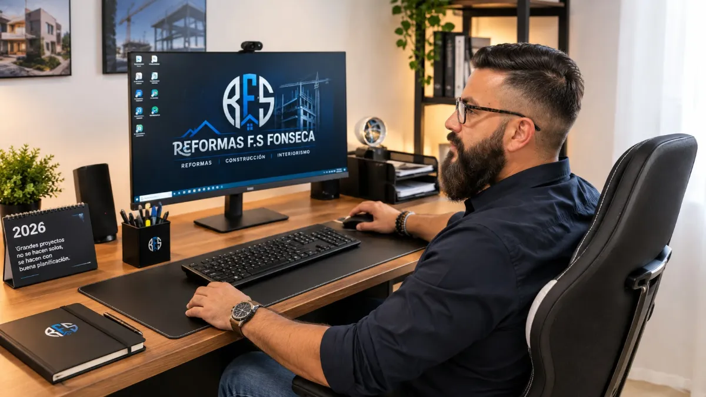
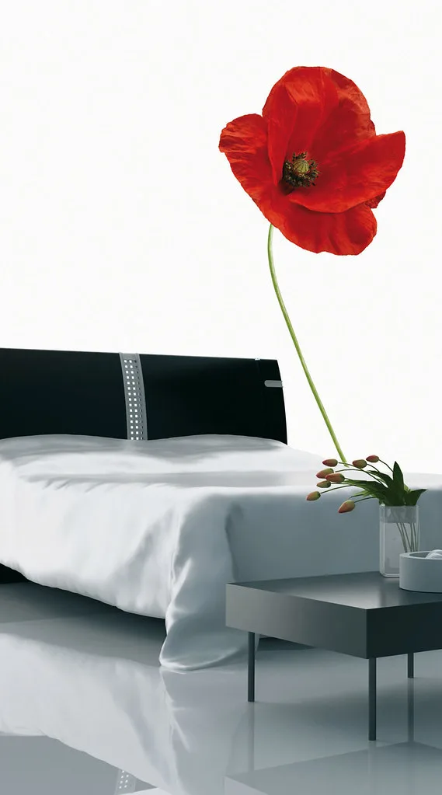
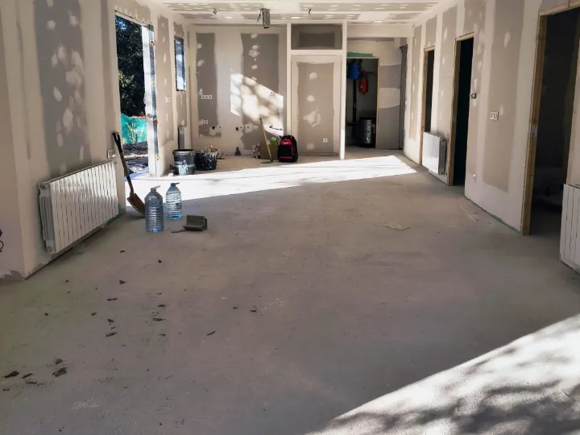
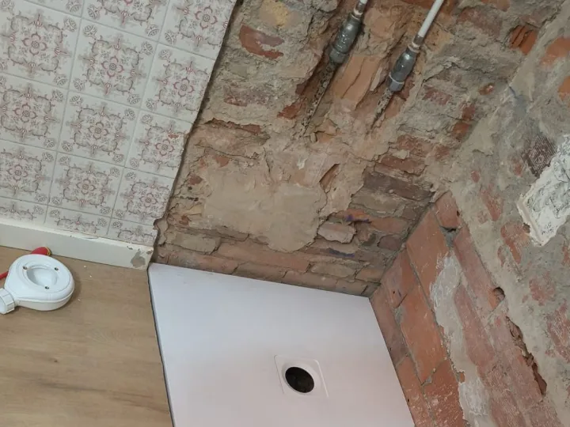
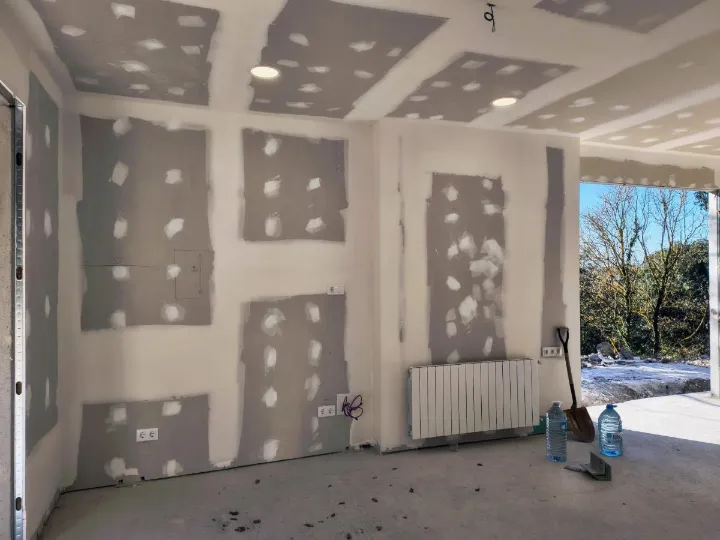
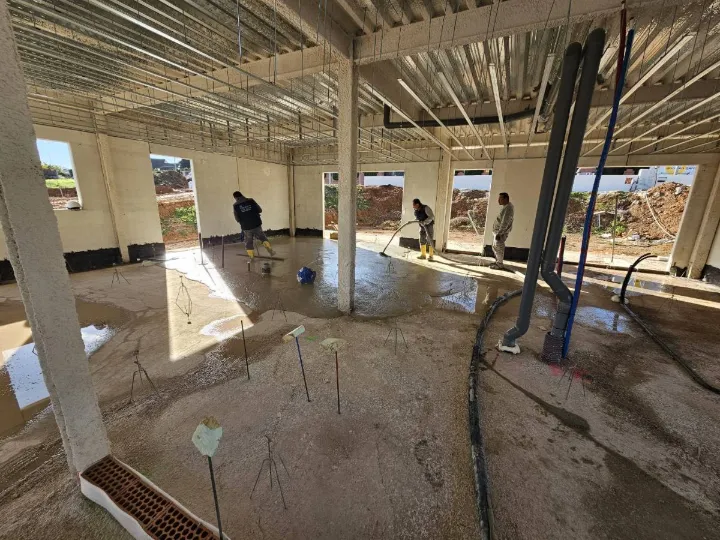
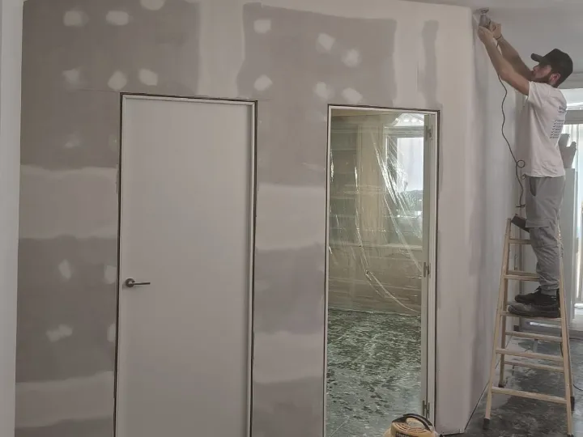
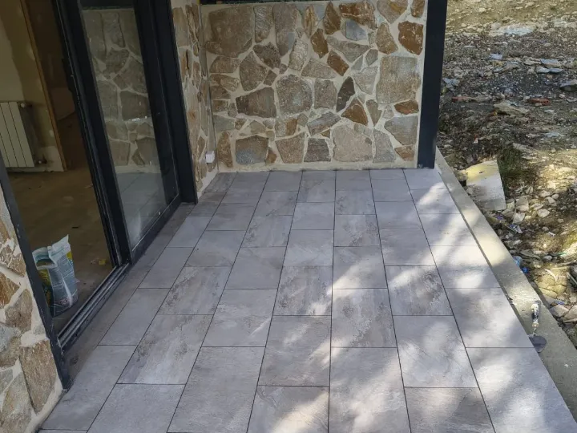
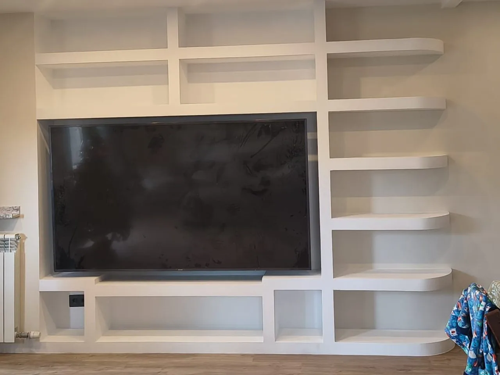
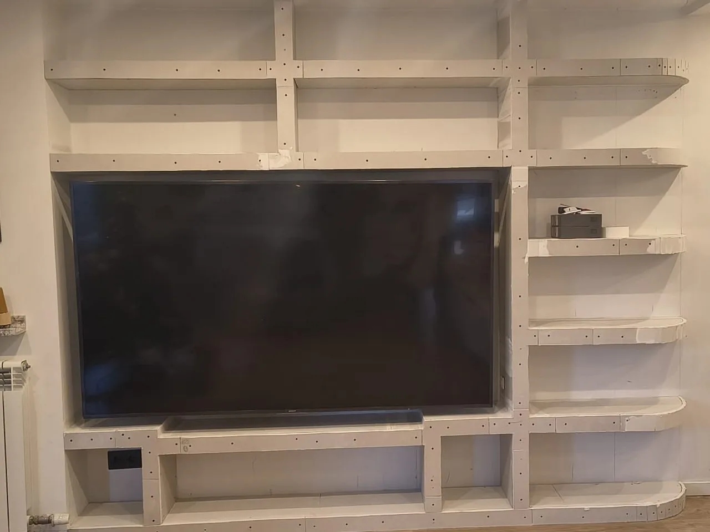

Un pressupost clar, abans de començar.
L’hi lliurem per escrit i detallat, després de veure l’habitatge. Així sap des del primer dia què es farà i en quin ordre.
Banys, cuines, reformes integrals i construcció d’obra nova al Maresme, la Selva i Barcelona. La visita no costa res.
Zona de treball
Barcelona i Girona, des de Tordera
Visita i pressupost
Sense cost i sense compromís
Valoració dels clients
5,0 sobre 5 a Google
L’hi lliurem per escrit i detallat, després de veure l’habitatge. Així sap des del primer dia què es farà i en quin ordre.
Qui li pressuposta la reforma és qui la dirigeix i qui en respon. No haurà d’empaitar cinc gremis per saber com va casa seva.
Li direm amb franquesa què val la pena canviar i què no. De vegades la millor reforma és la que es fa a temps i sense excessos.

L’empresa
Des del 2016 entrem a cases de veritat: pisos amb la instal·lació original, banys que ja no donen més de si, cuines que s’han quedat petites i cases que demanen créixer.
I quan cal començar de zero, també construïm: cases d’obra nova i ampliacions, des dels fonaments fins a la coberta.
Treballem amb materials i sistemes actuals, però sense perdre el que ensenya l’ofici: saber què aguanta, què dona problemes amb els anys i què convé resoldre abans d’enrajolar.
La confiança de qui ens truca es guanya igual a cada obra: sent honestos amb el que cal, endreçats en l’execució i nets en acabar cada jornada.
Jesús Fonseca · Des del 2016 · Tordera, Barcelona

Opinions
«Todo perfecto, buen trato y buenos acabados. Trabajan rápido y eficaces.»
«Todo muy bien, gente de confianza, buen trabajo. Gracias.»
Monika Szeri«Montaje rápido y limpio del acumulador eléctrico de casa.»
Emilio Jose FonsecaServeis
Obra completa o un sol ofici. Treballem amb equip propi i amb gremis de confiança, sempre coordinats per la mateixa persona.

Nova distribució, instal·lacions amb butlletí i acabats. Li lliurem l’habitatge net i a punt per entrar-hi a viure.
Demani pressupost
De l’enderroc a l’últim retoc: lampisteria nova, impermeabilització, enrajolat, sanitaris i mampara.
Demani pressupost
Obrim la cuina a la sala quan la casa ho permet: preses d’aigua i gas, electricitat al dia, fals sostre i il·luminació.
Demani pressupost
Construïm cases des de zero i també ampliacions: fonaments, estructura, tancaments i coberta.
Demani pressupost
Allisat, emmassillat i pintura, amb ajuda per triar el color i la resta de la casa protegida.
Demani pressupost
Paviments, terrasses, humitats i reparacions que convé fer bé i d’una sola vegada.
Demani pressupostTambé fem la instal·lació de llum, aigua i gas amb butlletí certificat, pladur i sostres, aire condicionat, moviment de terres, paleteria, baixants, armaris a mida, aïllament acústic i petites reparacions. Si ho prefereix, lliurem l’obra clau en mà.
Obres
Obres nostres, fotografiades a peu d’obra. Premi qualsevol per veure-la en gran.


Què inclou
Un bany i una casa sencera es preparen amb la mateixa cura. Això entra sempre al pressupost: ni es cobra a part ni cal demanar-ho.
Cobrim terres, mobles i accessos abans de moure res, també en habitatges habitats.
Contenidor, càrrega i retirada inclosos. No es queda a la seva terrassa esperant.
Li diem quins calen i, si ho prefereix, els tramitem nosaltres.
Sap quina setmana entra cada gremi i quan recupera la casa.
Es lliura neta i endreçada, no escombrada per sobre l’últim dia.
Revisem l’obra amb vostè i corregim el que no quedi bé.
Procés
L’obra segueix sempre aquest ordre. Per això en cada moment sap en quin punt es troba casa seva i què queda per fer.
Anem a casa seva, prenem mides i escoltem què necessita. Sense cost.
Per escrit i detallat, amb materials i terminis previstos.
Dates, gremis i permisos resolts abans de començar.
Una persona al capdavant i la casa endreçada cada dia.
Revisem junts el resultat i repassem el que calgui.
Dubtes
El que més ens pregunten abans de la primera visita. Si el seu dubte no hi és, truqui’ns al 613 76 64 76.
No. Anem a veure l’habitatge, escoltem què necessita i li lliurem el pressupost per escrit, sense cost i sense compromís.
Va per escrit i detallat, amb els materials i els terminis previstos. Així sap des del primer dia què es farà i en quin ordre.
Sí. A més de reformar, construïm cases d’obra nova des de zero i fem ampliacions: fonaments, estructura, tancaments i coberta. Com en qualsevol obra, la visita i el pressupost no tenen cost.
Sí. Fem les instal·lacions de llum, aigua i gas amb el seu butlletí, de manera que queden certificades i en regla.
Treballem des de Tordera al Maresme, la Selva i l’àrea de Barcelona i Girona: Tordera, Blanes, Lloret de Mar, Malgrat de Mar, Palafolls, Pineda de Mar, Calella, Mataró, Girona i Barcelona. Si la seva població no és a la llista, pregunti’ns.
Contacte
Expliqui’ns en poques línies què vol fer. Li truquem per concertar la visita i, després, li lliurem el pressupost.
Treballem habitualment a